Overview
In this project, we create polygon mesh by evaluating Bezier curves and surfaces using de Casteljau's algorithm. TOBE CONT
Section I: Bezier Curves and Surfaces
Part 1: Bezier Curves with 1D de Casteljau Subdivision
Briefly explain de Casteljau's algorithm and how you implemented it in order to evaluate Bezier curves.
To implement BezierCurve::evaluateStep, we utilize de Casteljau's algorithm which a recursive method that uses linear interpolations to define a Bezier curve. Essentially, if we are given n points and interpolate a point in between each pair, resulting up with n - 1 points, repeat until we end up with only one point which will lie on the Bezier curve at a given parameter t which will define the curve ranging from 0 to 1.
The function BezierCurve::evaluateStep in my project, we check if there is only one point first; if so, that means we are finished. Otherwise, the function evaluates one step of the de Casteljau's algorithm at a time by checking how many points there currently are or from the previous step. It calculates the lerped points and returns a vector containing the newly interpolated points.
Take a look at the provided .bzc files and create your own Bezier curve with 6 control points of your choosing. Use this Bezier curve for your screenshots below.
Show screenshots of each step / level of the evaluation from the original control points down to the final evaluated point. Press E to step through. Toggle C to show the completed Bezier curve as well.
|
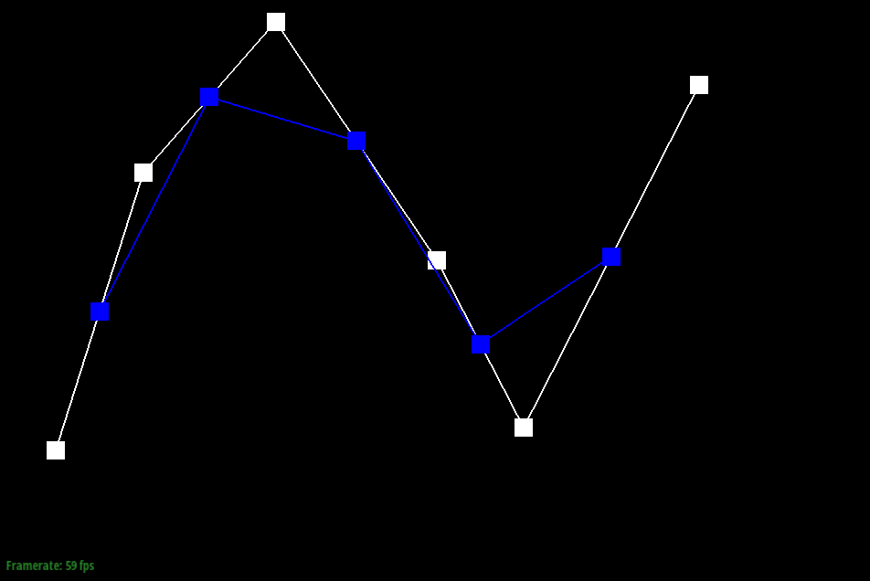
|
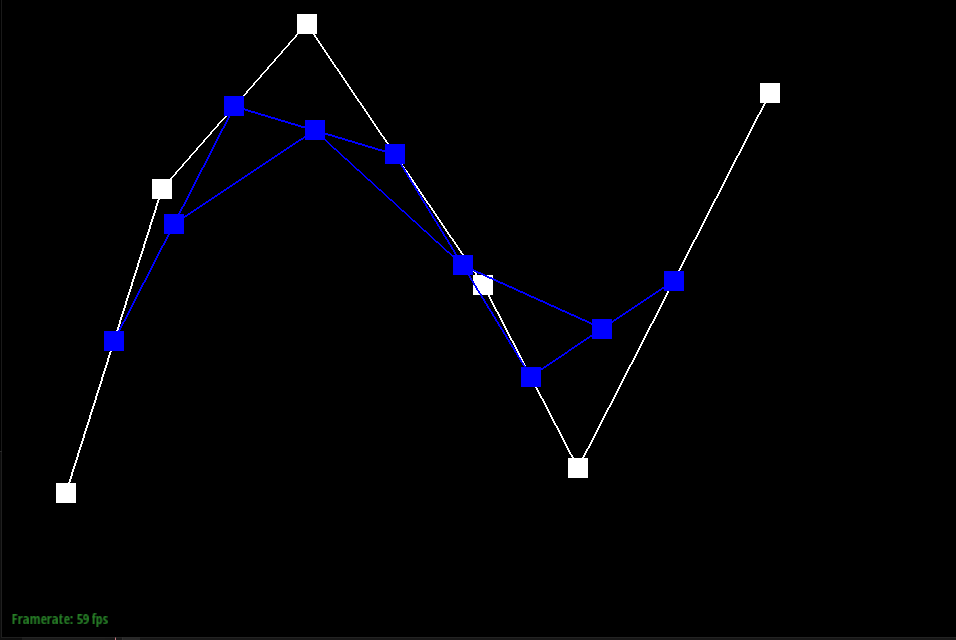
|
|
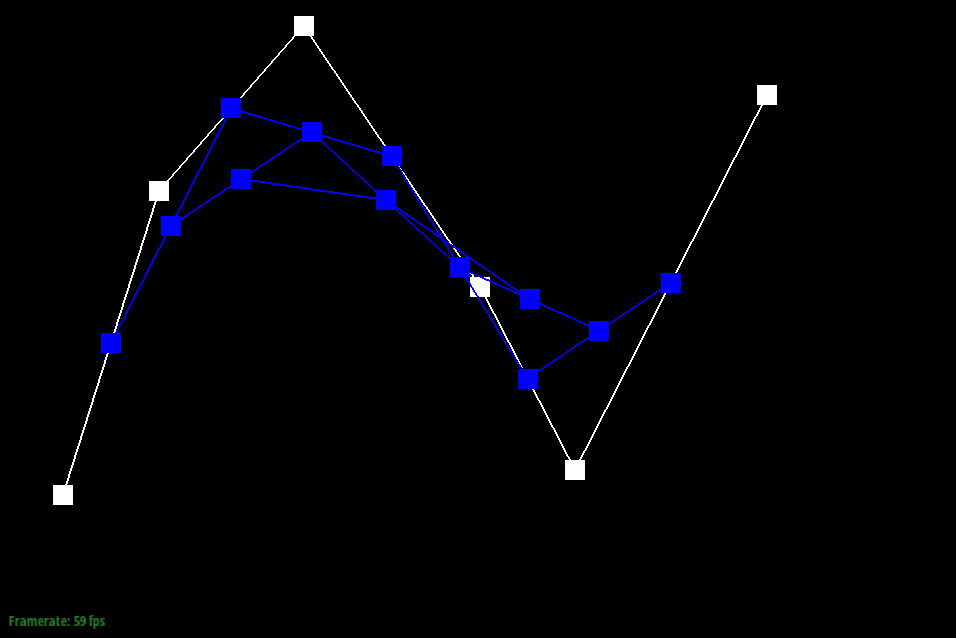
|
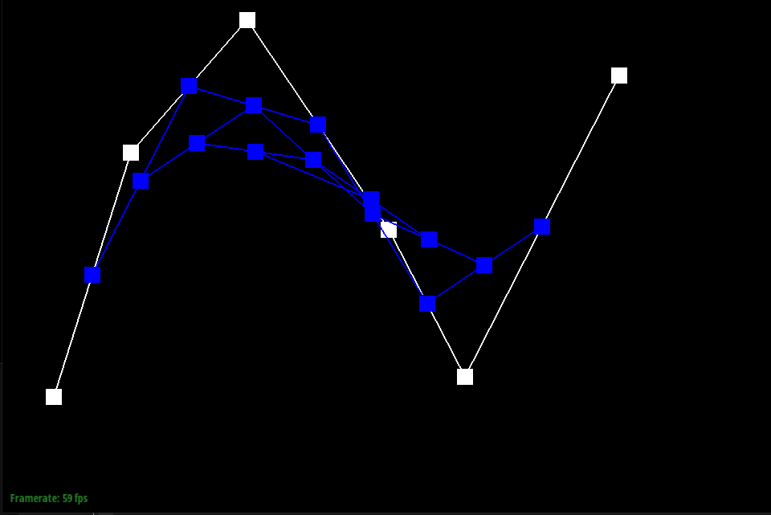
|
Show a screenshot of a slightly different Bezier curve by moving the original control points around and modifying the parameter \(t\) via mouse scrolling.
Part 2: Bezier Surfaces with Separable 1D de Casteljau
Briefly explain how de Casteljau algorithm extends to Bezier surfaces and how you implemented it in order to evaluate Bezier surfaces.
To extend de Casteljau's algorithm to Bezier surfaces, we can imagine an 4 x 4 array of control points where there are 4 rows of Bezier curves defined as u and along the rows are another set of points that are moving along the Bezier curves in u can be defined as v. We use the same evaluation formula from BezierCurve::evaluationStep for BezierPatch::evaluationStep which BezierPatch::evaluate1D will define the single point along the Bezier curve. We recursively apply the 1D de Casteljau's algorithm to u and repeat in the v direction to eventually obtain the surface points, creating a Bezier surface.
Show a screenshot of bez/teapot.bez (not .dae) evaluated by your implementation.
Section II: Triangle Meshes and Half-Edge Data Structure
Part 3: Area-Weighted Vertex Normals
Briefly explain how you implemented the area-weighted vertex normals.
To implement the Vertex::normal function, we need to compute the area-weighted normal for each face incident to a vertex. First, we find the position of each vertices in a triangle face by using half-edge structure traversal. Then, we calculate the area of the triangle given these vertices as vectors using the formula below:
|(v1 - v0) x (v2 - v0)| * 0.5
twin() and next(), repeating the process above until we return to our original half-edge. With the 3D vector that contains the sum of all the area-weighted normals, we apply the unit() function and return a normalized sum of all area-weighted normals. This process provides our program with Phong shading which is much smoother than flat shading.
Show screenshots of dae/teapot.dae (not .bez) comparing teapot shading with and without vertex normals. Use Q to toggle default flat shading and Phong shading.

|

|
Part 4: Edge Flip
Briefly explain how you implemented the edge flip operation and describe any interesting implementation / debugging tricks you have used.
The HalfedgeMesh::flipEdge() function flips an edge that is shared between two faces. To implement this function, we mark down where all the vertices, edges, half-edges, and faces are located. Then reassign the respective pointers with respect to the direction of the half-edges and flip direction. To visualize the process, we drafted up a simple diagram. This helped avoid any forgotten swaps.
Show screenshots of the teapot before and after some edge flips.
|
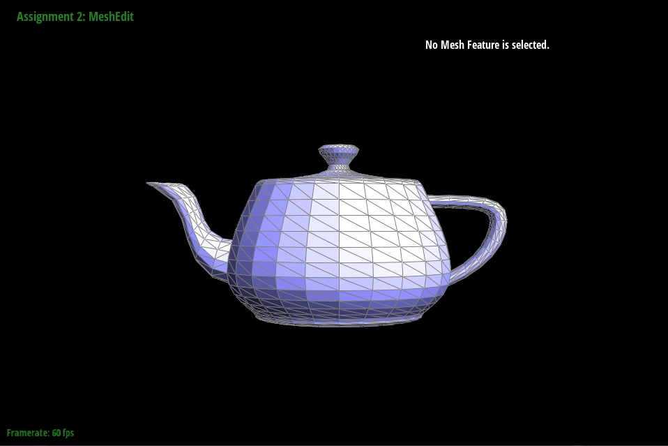
|
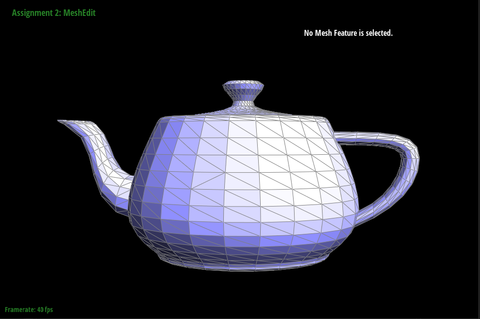
|
Write about your eventful debugging journey, if you have experienced one.
Fortunately, there wasn't a long debugging journey. Just maybe some typos and value swaps here and there.
Part 5: Edge Split
Briefly explain how you implemented the edge split operation and describe any interesting implementation / debugging tricks you have used.
The HalfedgeMesh::splitEdge() implementation is similar to HalfedgeMesh::flipEdge() in the sense that we reassign pointers. However, we are creating new edges, half-edges, faces, and one new vertex. Once, again, we drafted a diagram of a simple mesh being split and labelling newly created elements.
Show screenshots of a mesh before and after some edge splits.
|
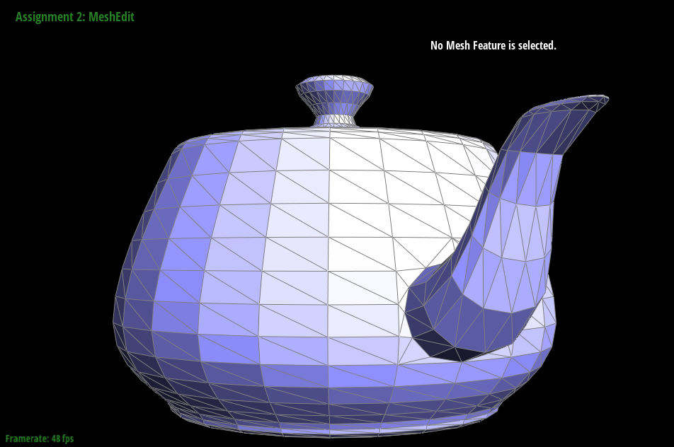
|
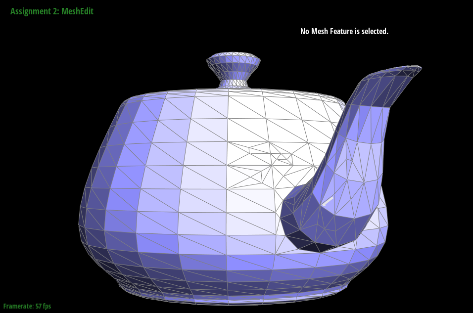
|
Show screenshots of a mesh before and after a combination of both edge splits and edge flips.
|
|

|
Write about your eventful debugging journey, if you have experienced one.
Similar to previous part, I did not have too much issues debugging. Just some crossed wires or rather pointers here and there. The diagram provided was extremely helpful.
If you have implemented support for boundary edges, show screenshots of your implementation properly handling split operations on boundary edges.
I did not implement support for splitting boundary edge.
Part 6: Loop Subdivision for Mesh Upsampling
Briefly explain how you implemented the loop subdivision and describe any interesting implementation / debugging tricks you have used.Loop division converts a rough polygon mesh into a smoother, high-resolution mesh. To implement loop division, we rely on the two previous parts of splitting and flipping edges. However, before we start actually subdividing, we calculate and store the positions of current vertices and new vertices created by the split. To calculate the position of current vertices, we use:
(1 - n * u) * originalPosition + u * sumNeighborPos
3/8 * (A + B) + 1/8 * (C + D)
Vector3D Vertex::newPosition for current vertices with new positions and Vector3D Edge::newPosition for vertices that will be inserted in the midpoint of an edge. After storing these positions, we split all the existing edges in the meesh. While doing so, we also flag the new vertices created from it. Next, we flip all the new edges which is marked by our split function with a new vertex and old vertex. Finally, we update vertex positions if they have been flagged as new. There were some issues with determining what was considered a new edge or vertex, but simplified the process by drawing it out.
Take some notes, as well as some screenshots, of your observations on how meshes behave after loop subdivision. What happens to sharp corners and edges? Can you reduce this effect by pre-splitting some edges?
Here we apply the recently implemented function on torus.dae. Initially, the mesh is sharp and blocky. But iterating through the levels, we see the mesh becoming smoother and well-blended, eliminating most sharp corners and edges. If we pre-split edges before upsampling, the shape changes as we apply more levels of upsampling.
|
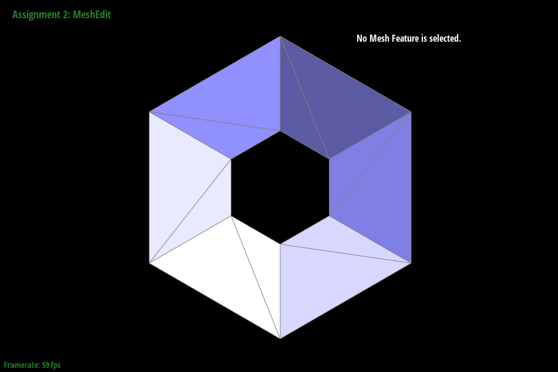
|
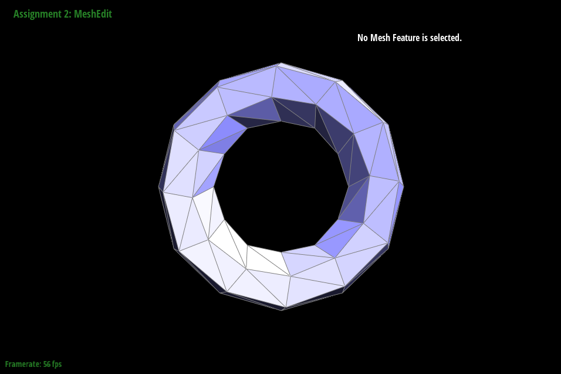
|
|
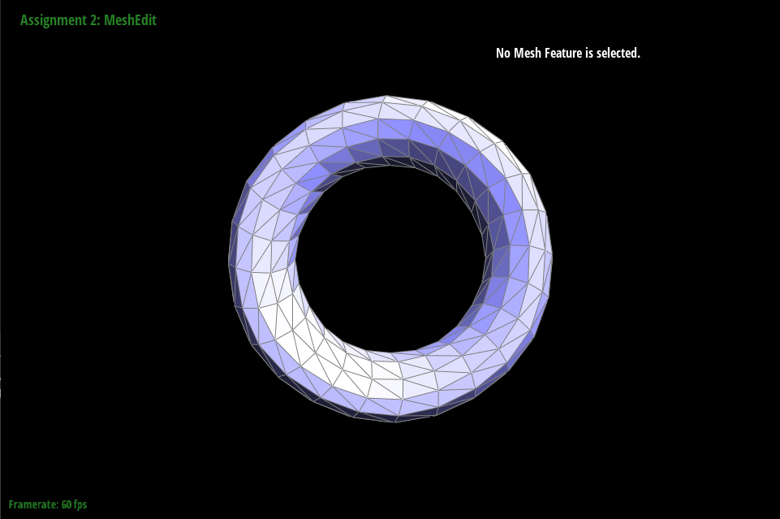
|
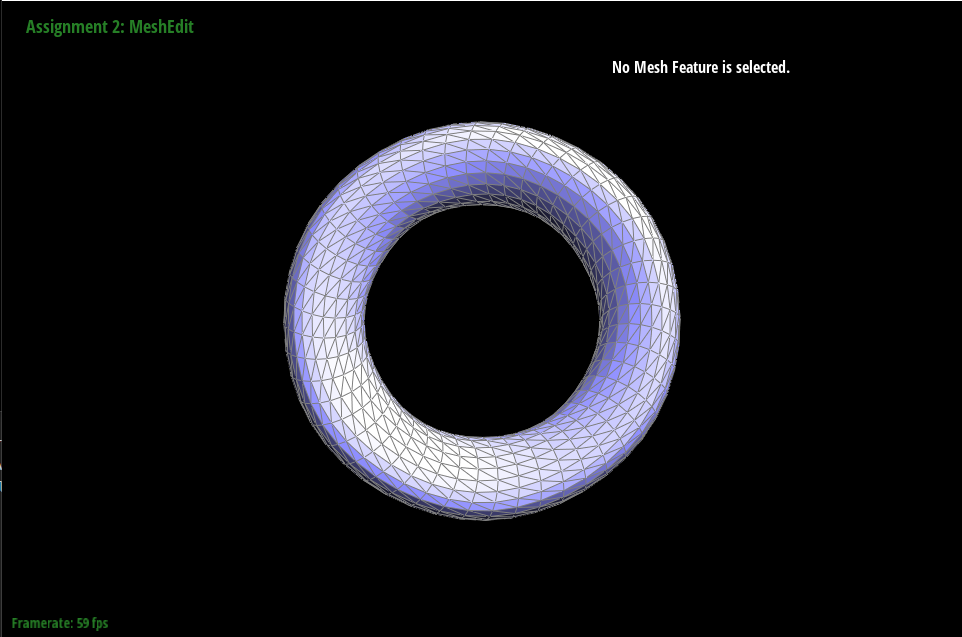
|
Load dae/cube.dae. Perform several iterations of loop subdivision on the cube. Notice that the cube becomes slightly asymmetric after repeated subdivisions. Can you pre-process the cube with edge flips and splits so that the cube subdivides symmetrically? Document these effects and explain why they occur. Also explain how your pre-processing helps alleviate the effects.
Without pre-splitting, we end up with an odd lemon asymmetric shape when we upsample. If we pre-split the diagonals and upsample, then we end up with a symmetrical shape. This fix is a result of giving each corner of the cube an equal number of degrees by splitting the diagonal.
|
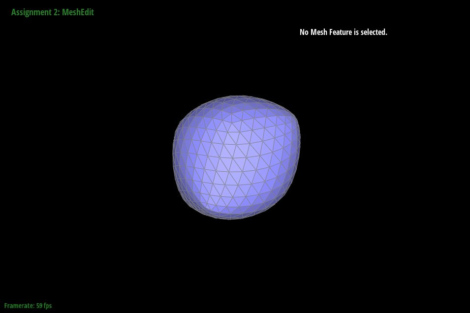
|
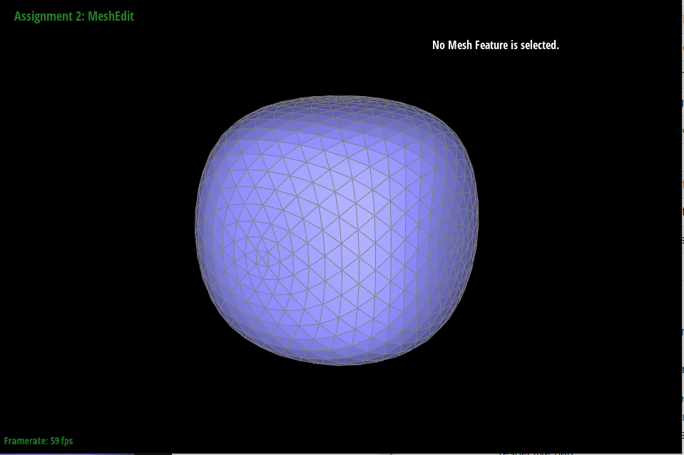
|
Github Pages!